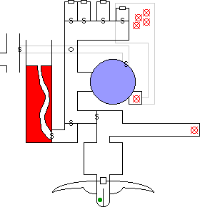
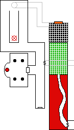

ineas felt something cold and sticky brush his leg. The invisible demon, its
foul secretions darkening the coating of flour to a light brown, was beginning
to stir. The demon moved stiffly and reacted slowly: it had spontaneously
reanimated as a zombie due to the close proximity of the Negative Material
Plane. Fineas hit it with a Lightning Bolt while Zem charged in with
his broadsword. It slashed at Fineas with its claws and pincers, knocking him
to the floor with serious wounds. Sensing trouble, Rosvenir and Mystical
teleported back from the demon's lair to counter the renewed threat.
ineas felt something cold and sticky brush his leg. The invisible demon, its
foul secretions darkening the coating of flour to a light brown, was beginning
to stir. The demon moved stiffly and reacted slowly: it had spontaneously
reanimated as a zombie due to the close proximity of the Negative Material
Plane. Fineas hit it with a Lightning Bolt while Zem charged in with
his broadsword. It slashed at Fineas with its claws and pincers, knocking him
to the floor with serious wounds. Sensing trouble, Rosvenir and Mystical
teleported back from the demon's lair to counter the renewed threat.
| Tax deadbeat: | Unnamed Glabrezu demon |
| IRS counsel: | Xanlithe, Malfeshnee demon |
| Unnamed Demon: | So ya sees, I wus heres in da Abyss and da Negatives Matervical Plane animated my body. So Acerak says he don't owes me nothin for da combat, onna counta I wudn't da one doin da fightin. |
| IRS counsel: | Under the regular tax code, said combat does not contribute to your taxable income. However, it is taxable under the AMT. |
| Unnamed Demon: | Da whozit? |
| IRS counsel: | The Alternative Monstrous Tax, or AMT for short. Under the AMT rules, the two 'C' criticals your body inflicted on the elven mage each incur a minimum tax of 2,000 gold pieces. The 'A' critical also inflicted by your Undead body incurs a tax of 200 gold pieces. Its a progressive scale you understand, so only demons capable of inflicting the more severe criticals pay the higher rates. |
| Unnamed Demon: | But, I don't get no money for dat. Acerak ain't gonna pay me nuttin! |
| IRS counsel: | That is not the problem of the Infernal Revenue Service. You can complain to Orcus if you feel the AMT is unfair. |
| Unnamed Demon: | But, Orcus is dead! |
| IRS counsel: | That is also not the problem of the Infernal Revenue Service. |
The Narrator
Kurik's Repel Undead failed. Reinforced by the powerful
negative energies of the Plane, it was all but immune to such spells. More
mundane means would have to suffice. To that end Zem slashed at it and
Rosvenir cast Flash to blind the creature. Kurik cast Bladeturn
III on the prone Fineas to protect him from further attacks while the elf
dragged himself away from the carnage. Mystical used Hurling to
unbalance the demon while Meilu swept its legs from under it, toppling it
backwards into the spherical chamber.
Zem's Gasvision spell was still active, and he watched as
the Undead Glabrezou righted itself and begin crawling up the spherical wall.
Unfurling its wings, the demon gave a mighty flap to land on the rim of the
chamber. It landed in the middle of the can of whoop-ass as Kurik hit with
his battleaxe, Zem's Death Strike inflicted another critical of Slaying,
and Meilu's sweep toppled it to the ground.
The party chopped the zombie to pieces, none large enough to
threaten them again. On one of its fingers Kurik discovered a ring. When
removed, the body became fully visible. This was how the demon had remained
unseen during the battle. Unfortunately the ring carried a curse of
enslavement of some sort, and none dared put it on.
Haer had remained in the demon's lair amongst the offal. He
possessed no Teleport spell, and no-one had thought to cast it on
him. During the battle he had continued the search for treasure, finding a
green stone bust of an unidentified human and a small amount of loot before
the rest of the party rejoined him.
Mystical

I held my nose while somebody else opened the trap door in the
floor of the demons lair. We crept down the tunnel, the halfling checking
for traps while the rest of us watched for ambush. It opened up into a
square chamber, where there were twelve humanoid bodies. Their armor and
equipment were that of an adventuring party.
I knew they were undead. How could it be otherwise? Every
damn thing in the place becomes Undead when it dies. I for one am
getting really sick of fighting Undead. I guess everybody else is too,
because Zem and Kurik cast Holy Aura and just stood there in the
doorway until the closest six had spontaneously combusted. I cast
Telekineses to drag the other six closer. Once all twelve had
turned to dust we used Telekineses again to drag out any
equipment still in good shape. There was a two handed sword which
carried a minor enchantment, and some loot. [Editor's note: the sword
is +10]
We never did enter the room. It was just some sort of trap that
killed a prior adventuring party. They probably Gated in anyway:
serves them right for messing with forces of which they have no
comprehension.

The Narrator
By this point the constant jabbering of the Dretch had grown
quite annoying. Endira stopped her Charming Song, and Rosvenir
instead cast Voice of Dominion. His first command was for the bloody
creature to shut up. The party inexplicably began referring to the Dretch as
the Demonic Telemetry Probe (D. T. P. for short).
Meilu thoroughly checked the square room using
Stonesight, finding no secret doors or other hidden chambers. The
adventurers retraced their steps, teleported back through the silvery
mist, and descended through the hole in the floor which Fineas had created. This secret tunnel emerged
into a hallway at a "T" intersection. To the left the hall
ended in a false door concealing some sort of trap. To the right it ran
some thirty feet and then turned left.
Straight ahead the hallway ended in a door.
Meilu examined the room beyond using Stonesight. It was a rectangular
chamber with four low stone columns spaced evenly in the center. Braziers of
coals cast a dim reddish light. In the far wall was an alcove holding a
highly detailed statue of a robed human. The statue held one hand before
its eyes, as if shielding from something. It very much resembled a human
mage trying desperately not to look at a medusa.
Seeing no reason to face the gorgon, the party turned right and
followed the hallway around to the left. It opened into two parallel halls
which met at the far end, where a third hall doubled back upon the first
two. [Editor's note: see the map inset] Meilu's Stonesight
found a tunnel leading from a concealed door in the floor of the
intersection.
At the end of the center hallway was a four armed stone
gargoyle, looking very much like one found in the Tomb of Horrors. In
front of the statue was a cracked clay pot, the whole coated with a thin
layer of dust.
Kurik's report to the Church
I approached the stone gargoyle cautiously. It was almost
identical to one we had encountered in the original tomb, which seems an
eternity but was really only two weeks ago. There were a few differences,
though. This statue wore a leather collar studded with four black stones
about its neck, and was whole and undamaged unlike the one in the Tomb
which had an arm broken off.
Fineas suspected that the
gargoyle would at some point come to life and attack. He welded its feet to
the floor using a Merge Stone spell. In the original Tomb we placed a
gem in each of the remaining three hands, and as it crushed them the statue
released a ring from a hidden compartment. I got four gems from Haer to place
in the hands of the statue. Nothing happened. Haer then gave me four gems of
real value to try, though these had no more effect. I can only imagine how the
halfling would have reacted had they been crushed. Since the earlier gargoyle
had given us a ring, I had Haer dust the statue with flour and then placed the
ring of Invisibility on one of its hands. The statue faded from sight,
but remained unmoving. We placed more magic rings on its other fingers, to no
avail. I had to Neutralize Curse again to remove the ring from its
finger.
Early draft of the RTOH Screenplay 436 INT -- HALLWAY IN FORTRESS OF CONCLUSION -- INDETERMINATE TIME A stony guardian stoicly defends a clay pot at the end of the hall. The torchlight casts stark shadows across its face. [[Note to director: turn those damn arc lights down for this shot!!]] Pull back to see the little demon creeping toward the stone gargoyle. [[Casting: try to get Gilbert Gottfried, or somebody else with no pride.]] The demon climbs up to its chest, and nervously unbuckles the leather collar. As soon as the collar is loose the gargoyle springs to life, throttling the demon. Dretch: Argh! Gggack! Phptt! [[Note: we haven't given the Dretch any actual lines, so it doesn't qualify for speaking part residuals.]] Mystical is prepared, and teleports the demonling to safety. [[Run the script by Sarah Michelle Gellar for the part of Mystical. She's into the whole demon/undead slaying thing, she might go for it.]]
The Narrator
The Dretch managed to fling the leather collar behind the
flailing gargoyle, where it could be retrieved using Telekineses.
Haer discovered a hidden compartment in one of the black stones, in which
was a slip of paper. It read, "Ahead the lines of access squarely meet,
the path to glory is at your feet. --A." This presumably referred to the
tunnel under the floor which Meilu had seen. Behind them the awakened
gargoyle continued to claw ineffectually at the air, and seemed quite
perturbed that it couldn't free its feet. Fineas cast Unstone,
turning it instantly to dust.
Cautiously the trap door was opened, and
the party followed a wide tunnel through several turns to emerge in a large
chamber tiled with one foot square black stones. There was an archway in one
wall, filled with a rolling orange haze. Similar to those in the original
Tomb, there were distinctive stones at the base of each side of the arch and
a third at the top. The stone on the left side of the archway was of jade, on
the right a pearlescent hue, while the stone on top was colored hazel. All
three stones began to glow softly as the party entered.
In the original Tomb, such stones had to be pushed in a
particular order to successfully traverse an archway. Having no idea of the
proper order, the party determined to make camp for the night and use magic
to learn the way. Meilu swept the area with Stonesight. The
wall opposite the archway bordered a large room tiled with green stone, each
bearing a letter or number. This green room was immediately beyond the
massive pit of Undead bones which the party had managed to avoid. Rosvenir
cast Commune True to learn the order to push the stones. The
answer was surprising: "Order is irrelevant."
Rosvenir cast Dream IV to know of four things:
Rosvenir's Dream
Standing in a room with black tiles... Walk through the archway... It
diverges into two paths... In the first path, the three stones around the
arch are not glowing... This path leads to a brilliant blue light... The
stones are glowing at the beginning of the second path... This path diverges
again, with one branch leading to the green tiled room and the other to the
room with the statue... Both rooms are completely empty...
Day 30
When Desatysso was released from his life of pain, his curse had transferred to Zem. Kurik
had neutralized the curse, but only for 22 hours. He had attempted to extend
the neutralization when the party made camp, but failed. Zem
lay now on the ground, his limbs bound tightly to his sides and his eyes and
mouth sewn closed. Kurik said a brief litany to Pandeos and attempted to
Neutralize Curse again, this time a more powerful spell which would
hold it at bay for weeks. It took three tries, but finally the spell took and
Zem was free.
The Dream indicated that the stones must be extinguished
before traversing the archway. Haer experimentally pushed the jade stone,
finding that it slid slightly inwards and then ceased to glow. He pushed the
pearl on the other side, and Rosvenir the top hazel stone. When all three
had been pushed the orange mist dissipated, leaving only a slight distortion
in the air where it had been. The room beyond was tiled with blue stones,
and held another arch in the far wall. This far arch appeared totally
mundane, with no mists or glowing stones.
Rosvenir sent the Demonic Telemetry Probe
through the portal. The Dretch hesitated, then stepped through. A moment later
it appeared in the blue room, indicating that there is some sort of magical
transport involved. Suddenly something snatched the Dretch and dragged it out
of the field of view. Moments later the decapitated head of the poor demonling
bounced across the floor and came to rest staring at the adventurers, a pool
of greenish blood slowly forming beneath it. A few minutes later the
reanimated body of the Dretch shambled over, feeling about until finding its
head, and crookedly reattached it. The zombie Dretch staggered out of view.